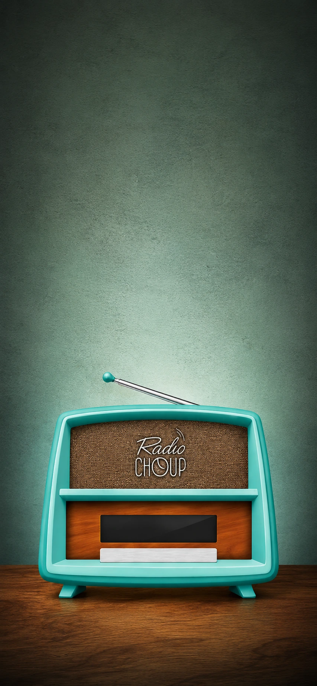

Radio Choup
Une ambiance rétro, douce et immédiatement reconnaissable.
Un visuel vertical pensé pour un format mobile type iPhone X, avec une grande respiration au-dessus du poste pour accueillir un titre, un menu ou un appel à l’action.
Écouter maintenant